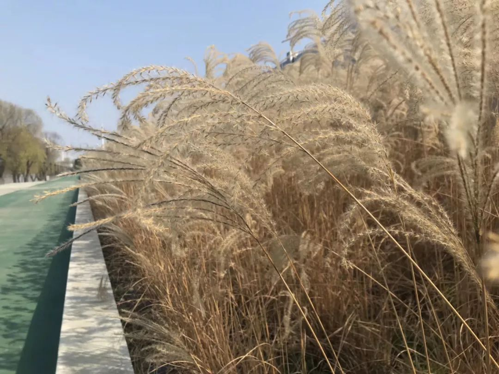
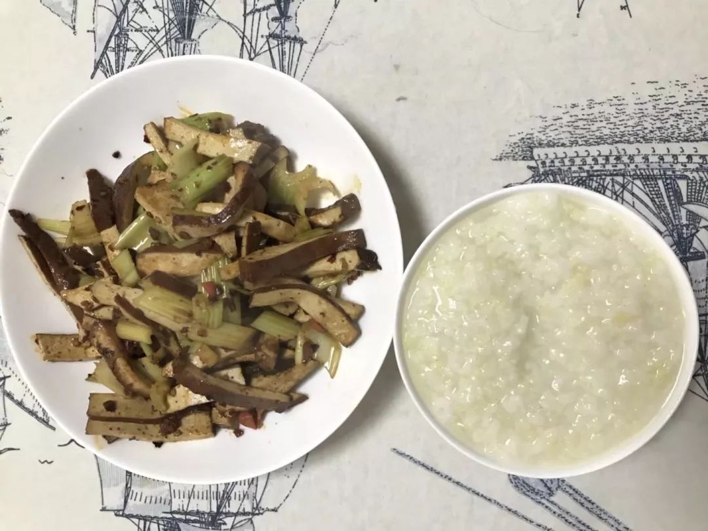
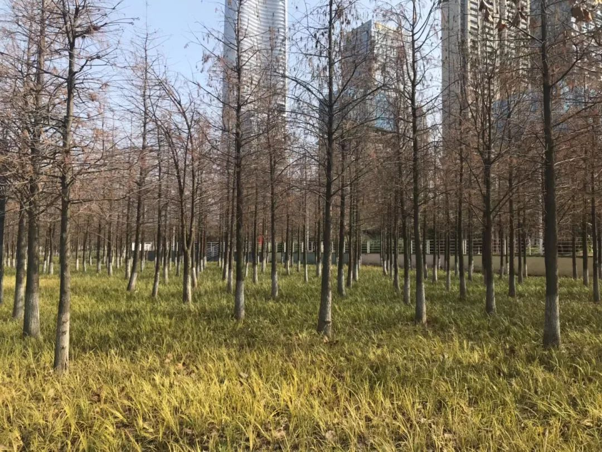
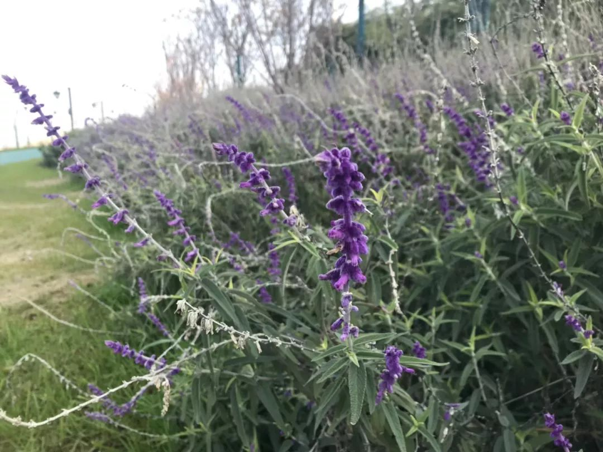
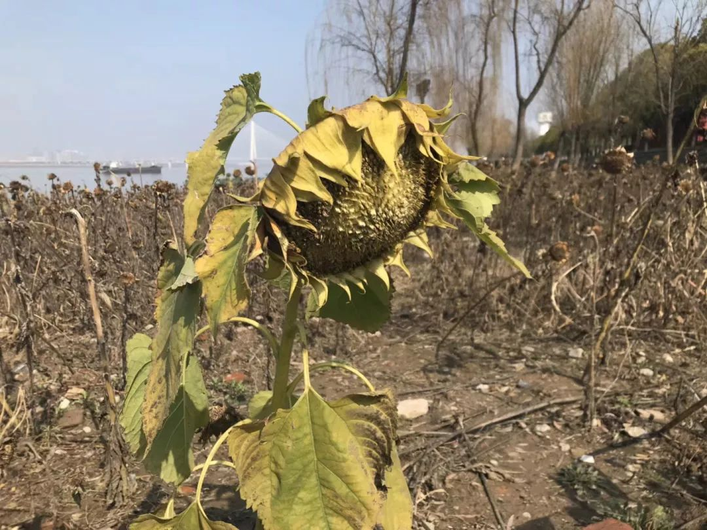
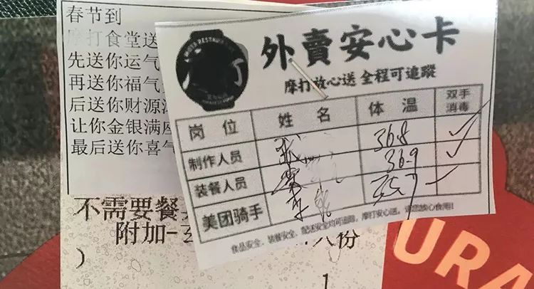
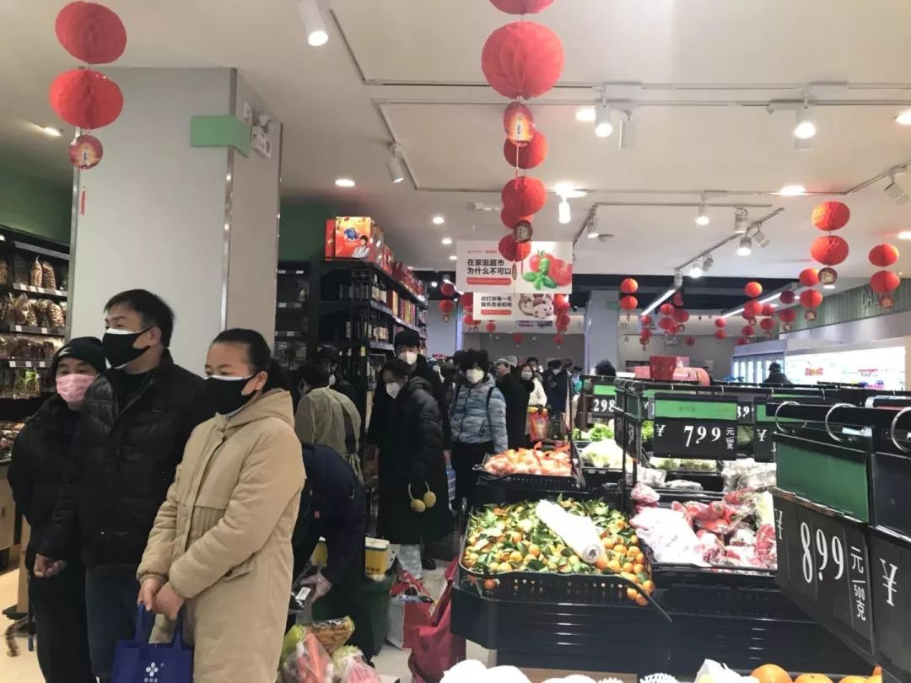
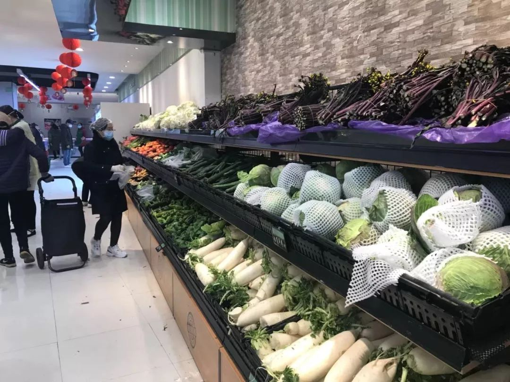
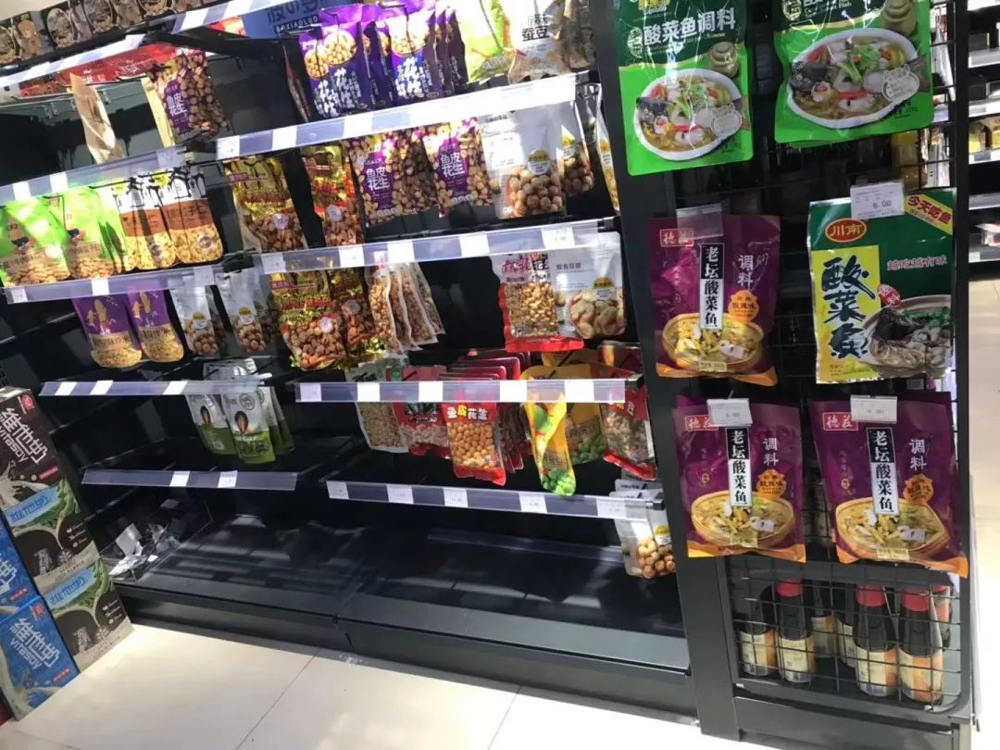

人可以被困住，但不能因此停住|郭晶的武汉封城日记|2⁄2-2⁄4
原文链接 备份链接 2月3日阳光下的武汉长江大桥 （图片由郭晶提供） 这是我的朋友郭晶的日记。 记录了封城期间在武汉独居的外地女性的真实生活体验和心理感受。 这些文字见证了郭晶如何从适应突发危机到重建日常生活，再到尝试帮助他人的过程。 之 …

2月9日捂汗江边的荻（图片由郭晶提供）
上一篇合集我们尝试了3次最后还是被山掉了。但在郭晶的微博上看可以看到。想及时获得最新内容的朋友可以在微博上关注@社工郭晶。
文末有郭晶的个人微信二维码，也可以申请添加。她每天会在朋友圈更新。（但请不要找郭晶闲聊，以免增加她的负担。）
很遗憾，
不被尊重的人、权利被侵害的人
很难获得道歉。

2月9日

_
什么人不道歉？
父母很少道歉，即便道歉的时候也总是说“为你好”，暗含着一种指责，似乎是子女不领情。有一年春节，我爸妈在我明确拒绝相亲的情况下还是给我安排了相亲，我十分生气，说他们不尊重我，不想去见他们安排的人，他们还反过来指责我不礼貌。这个事情我曾发过朋友圈，有人留言说我应该理解父母，跟父母沟通。
其实问题不在我，我无法单方面开启一个平等的对话。即便子女已经成年，很多父母依然保持一种家长式的话术来教育子女，他们说“你不懂”“我吃过的盐比你走过的路都多”。父母总以为自己的格局更高，自己是对的，无法平等地看待和尊重子女。
性骚扰的施害者很少道歉，他们甚至用指责受害者的话语来为自己辩解，企图说明不是自己的错，他们说“你穿太少了”“你不应该晚上出门”“你勾引我”。
很遗憾，不被尊重的人、权利被侵害的人很难获得道歉。李-w-l是否能获得道歉呢？

2月8日的晚餐
（图片由郭晶提供）
昨天的晚餐是芹菜炒豆干加稀饭。
晚上参与了李w-l的祭-奠活动。
昨晚聊天的主题是世界末日，有人提了一个问题：假定人类在一天后就会灭亡，那你会做什么？讨论这个问题的时候，我们发现如果只有一天可以活，世界会比现在封城的状态更糟，因为很少人会继续为别人做服务。所以人们很多浪漫的想象很难实施。
在世界末日的时候人们会想做没有做过的事情，因为没有未来，伦理也将不复存在。人们遵守既有的规则是为了一种社会秩序，社会奖励遵循规则的人，而惩罚破坏规则的人。
世界末日人们会有欲望，也会有恐惧，人们会想要找到那个互相依恋的人。互相依恋是一种凄凉而安全的关系，在这段关系里的人都只有彼此。可是找到这样的关系异常困难，我们依恋的那个人未必会对我们有同样的依恋。而且交通瘫痪后，我们也未必能够跟自己依恋的人在一起，那人们该怎么应对恐惧呢？
有人说：“宗教团体应该会有集体的仪式可以寻求慰藉。”我们这些无神论者怎么办呢？于是，为了满足大家的欲望，有人提出应该搞一个性爱趴，欢迎任何人加入。
很难解决的问题是食物。有人说可以吃火锅，可是世界末日的时候谁会看着别人在狂欢而自己默默地择菜、洗菜呢？可见，人类最基本的需求都无法离开社会。在世界末日，很少人可以吃到大餐，大部分人只能去超市拿一些自己喜欢吃的速食。有人惊叹道，“我们发现了一个人类的秘密。”

2月9日捂汗江滩的绿道（图片由郭晶提供）
睡觉前，我刷手机的时候刷到2月4日一个公众号发了一段录音，是一个山东姑娘打给捂汗市长热线的电话，电话中她表达了对武汉政府处理山东捐赠的350吨蔬菜的不满，认为政-府不应该拿去卖，对政-府分配物资的流程提出了建议，希望物资以最快的方式到达一线工作人员那里。
那段录音十分令人感动，她在电话结束的时候说希望市长可以给她一个回复。在很多人都充满无力感的时候，她依然坚持问责，这是一个明知不可为而为之的行为。而社会改变是由无数这样的人一起推动的。

2月9日捂汗的水杉（图片由郭晶提供）
今天阳光明媚，我忍不住还是出了门。我并没有目的地，就是向往阳光。出了小区，我想起我喜欢的那段江滩，决定去走一走。那片江滩是一次跑步的时候偶然跑到的，几公里的路程竟然让人有经过四季的感觉，有春天的翠绿，夏天的墨绿，秋天的亮黄和冬天的枯黄。我很喜欢。
骑车去江滩的路过一个小区，楼下有几个穿着防护服的人，其中一个拿着喇叭喊人下楼取菜。两个老人领了菜后就上了楼。到了一个江滩的入口，管理员坐在一个小凳子上，面前放着一袋瓜子，在悠闲地嗑瓜子。
我问：“现在还在工作害怕吗？”
他皱着眉头说：“有啥害怕的，这个主要看免疫力强不强。”
我也看不出他是否真的不担心。我只能跟他说保重。
江滩的道路两旁每隔几米都竖着黑色的灯杆，每隔一个灯杆，就会在灯杆上多放一个黑色的音箱，这些音箱每隔一分钟就放着：“为切实落实市肺炎指挥部通告要求 ，全力做好卫生防疫工作，请市民、游客朋友们在公共场所必须佩戴口罩，不在园区遛宠物，不随地吐痰，不聚集活动。特别煞风景。

2月9日捂汗江边的鼠尾草（图片由郭晶提供）
上次是封城前几天和朋友一起来，我们还用识别植物的软件查了一些植物，认识了鼠尾草和荻。我对日常见到的植物认识甚少。
江滩的人很少，我时不时地拉下口罩到嘴下的位置，暂时性地感受一下自由的呼吸。这段江滩有绿道，偶尔遇到跑步的人。有个男人随身带着音箱，放着节奏轻快的“男人不坏，女人不爱”。平时，我会觉得这样的歌很恶俗，现在竟然有种热闹感和喜感。
我路过了枯黄的水杉、黄灿灿的黄金菊。路上有一对情侣，女生在口罩之外还戴了一个头盔。我走到了月亮湾码头，旁边的金牛游泳俱乐部门口有个小黑板，上面写着“水温：7.4℃，2月7号，祝：春节快乐，捂汗加油”。
路过了一片枯萎的向日葵，其中有一棵还在顽强地保持着一种生命力。

2月9日捂汗江边的向日葵（图片由郭晶提供）
遇到一个停在路边的出租车，司机在玩手机，我停下自行车问他，“你现在接送病人吗？”他紧张地说：“我们不拉发热的人，主要是接送老弱病残的人去买菜、买药。”
“社区安排的吗？”
“对”
“那发热的人怎么办？”
“社区也会安排。”
“那社区会发口罩吗？”
“公司发的”
“那消毒的东西呢？”
“我们每接送一趟人就会消毒。”
我说“辛苦啦，保重”，然后骑车回家了。

2月9日捂汗月亮湾码头（图片由郭晶提供）
2月10日
_
这些天很多人问我捂汗现在怎么样。这当然是出于关心，抱歉的是我无法回答这个问题。
谁能代表捂汗？捂汗都有哪些人？新型冠状病毒肺炎的感染者、医护人员、各种慢性病患者（HIV感染者、糖尿病患者等）、残障人士、孤寡老人、环卫工、超市收银员、外卖员……你想问的是谁呢？
捂汗现在是一片乱象。没有人有一个清楚而完整的答案。除了对自己周边环境和一些人的一点了解，我获取信息的方式和大家是一样的。
昨天的晚餐是香菇炒香肠加稀饭。香菇是在封城的第一天买的，在冰箱里放了十多天，有一个香菇变成了黑红色，我还是把它切了，又有些担心，就上网查了一下，看到有人说香菇变黑代表发霉，最好不要吃。谨慎起见，我还是扔了那个已经切好的香菇。
蔬菜屯太多容易变质，就会导致浪费。然而，为了生存我们又不得不屯。

2月9日的晚餐
（图片由郭晶提供）
晚上和朋友聊天。有个广东的朋友点了外卖，发现外卖单上多了一个“外卖安心卡”，上面有制作人员、装餐人员、骑手的姓名、体温和双手消毒情况。几个朋友在家里帮忙辅导亲戚家的小孩写作业，感到耐心受到极大的挑战，有时候会忍不住向孩子发脾气。有人说：“小孩太善良了，第二天就会原谅我们。”当然，这也是因为小孩的生活必须依赖于大人。
我们讲到强迫症，有人会强迫性地抠痘痘，有人每次洗澡前先把卫生间刷干净，有人不能接受没有洗澡换衣服坐自己的床，有人碰了现金就会洗手。有人说：“只讲强迫行为会使强迫行为进一步强化。”我们会需要一些名词来解释自己的行为，但不能让这些名词定义自己。我们某个阶段会有某个强迫行为、某个阶段会有抑郁症状，但不代表我们会一直是这样的人。这些行为和症状都有原因。

2月9日广东外卖安心卡（图片由郭晶提供）
于是，我们也说了为什么会有某个强迫行为以及为什么。那个每次洗澡前先刷卫生间的人在父母家的时候就不会这么做，因为觉得自己刷了也没法保持卫生间的干净，而在自己租的房子里会更有掌控感。一些强迫行为是为了寻找某种秩序，找到自己的掌控感和安全感。
有个朋友在考英国的会计师证，她说每个人都应该了解一些基本的会计知识，英国是自己报税，这是一个参与和了解国家税收政策的方式，如果有不满意也可以针对性地提建议。而我们很多人对自己纳税的情况一无所知，只是被动地执行税收政策。
有些所谓的专业知识我们会觉得没有必要了解，也有人试图用专业主义把普通人排除在外，甚至利用这种信息差为自己谋利。当然，对每个专业的深入了解都需要长时间的学习，但总还是有人在用简单的语言向普通人做科普。这次疫情中就有很多人做关于防护、病毒的科普。

纪录片《浩劫求生》截图
今天是阴天，我没有出门的需求和欲望，感到有些轻松。早上做了一些整理资料的事情，很快两个小时就过去了。
有朋友前几天推荐《浩劫求生》，这是一部模拟真实生活环境下的灾难系列教学纪录片。中午看了第一集，是关于劫飞机的，有一个人全程在教大家如何制服劫持飞机的人和自救，在将劫匪的手脚都绑起来的过程，他说：“现在要剥夺他们的感官能力，此刻最重要的就是控制，我们要尽量剥夺他们的掌控能力，视力、说话能力，甚至塞住他们的耳朵，这些人会完全变成废物。”那一刻，我和劫匪产生了共鸣。
我们像是被当作劫匪一样对待，虽然不是被直接地剥夺这些能力。然而，我们看到的和听到的信息被过滤，我们经常发不出声。有关李-w-l的一些信息已经在消失。社会让我们自我审查，一些人还审查别人，建议别人删除和他无关又没有侵害任何人的言论。

2月10日全副“武装”的朋友（图片由郭晶提供）
下午，我和一个朋友约了见面。她是我到捂汗认识的，只见了两次面，但还挺投机的。上次见面是1月19日，没想到这次见面是在封锁的城市中。这是一次多么难得的相聚。她有电动车，所以是她来找我。我出门的时候下着小雨。朋友全副武装，她戴着口罩，穿着雨衣，背包上也套了防雨罩，脚上穿得是蓝色的雨鞋。
幸亏外面没人，不然我都认不出她来。我们非常默契，我没有邀请她到家里，她也说我们在外面找个地方坐一下。现在想找开门的休闲场所是不可能的。一个饺子馆的门口搭了一个简易棚，棚下有个凳子。我们坐下来聊天，她也希望可以为这座城市做些什么，她想拍一些视频记录封锁中的捂汗，可以做事情的想法让她非常兴奋，她讲话的时候充满了喜悦。
雨停了，我们去江边走了一会，江边的砖缝里都长了青苔。

2月10日砖缝里的青苔（图片由郭晶提供）
2月11日
_
很多网友开始关心我的饮食，这让我有些意外，因为我觉得自己吃得还不错。
小时候，每天早晚基本都是馍菜汤，汤一般是白面汤，就是用面粉加少量水搅成固体糊状，再加水把它搅成液体糊状，等水开了搅拌进去。我和我弟不喜欢喝白面汤，家里偶尔煮大米汤，放的米也很少。中午基本是面条，家里逢年过节才有肉吃。夏天可以吃的蔬菜种类多一些，因为农村人都会自己种菜。冬天能吃的菜比较少，主要是萝卜、白菜、土豆、洋葱。

2月10日的晚餐
（图片由郭晶提供）
现在尽管是冬天，我能吃到的蔬菜种类也比较多，基本天天有肉吃。我每天喝粥是嫌麻烦，为了省去一些洗锅煮饭的时间和工序，早上会顺便把晚上的粥一起煮了。我还算喜欢做饭的人，但每天花很多时间做饭和洗碗是太不易的。日常的做饭、洗碗是相对单调和重复的工作，而人一般做创造性的工作会更有价值感。如果是闲暇时间学做一个新菜，会很有满足感，而日常为了饱腹而做饭很难有太多乐趣。很多偶尔做饭的男人就不能理解女人对家务劳动的抱怨。
贫穷归根结底是分配不均的问题。当贫穷遇到疾病时，死亡就更近一些。此次疫情中，各省市的病死率中，天门的病死率一直居高不下。2月9日，湖北省卫健委首次公布的省内各市州病死率数据显示，天门的病死率是5.08%，居全省首位。天门市有2个三甲医院，综合性的三甲医院只有1个。天门的医疗资源有限，面对疾病死亡的风险就更高。

2月11日捂汗一家超市里排队的人
（图片由郭晶提供）
昨天的晚餐是蒜苗香菇炒豆干。
晚上照旧和我的朋友们聊天。有人出小区的时候被量了体温，显示34℃，她还有家人测量出的体温是32℃，据说还有人测出是25℃。测量体温的人说越低越好，完全无视人类应有的正常体温标准。
有人问如果解封了大家第一时间会做什么，就有人提到看到的一个段子，网友说要在家再关一天，万一第二天辟谣了呢。大家都莫名觉得很有道理。
讲到后悔的事情，有朋友后悔送我的礼物不够。我表示自己一直对接受礼物感到压力，总是被“礼尚往来”的社会规则所束缚，觉得应该还礼，可挑礼物也很累人，总是希望别人可以喜欢或用到。大家纷纷表示有此困扰。
穷人会更在意送礼，有朋友说：“张爱玲的小说里有个人家里很穷的时候去别人家总会拿一些手礼，可是他家里宽裕后就不再这么做了，而且不再担心别人的评价。尽管别人会说他以前总是会带礼物，现在就不讲礼数了。”

2月11日捂汗一家超市的蔬菜区
（图片由郭晶提供）
从小，周围的人都是通过别人的礼物判断关系和等级，父母会看谁家过年送了什么礼，婚嫁的时候哪个亲戚随了多少份子。
我初中的时候一周的生活费10块钱左右，坚持省吃俭用给朋友买生日礼物，也会期待在自己生日的时候收到礼物。很多人跟以前的同学并不再亲近，颇有社会压力总还是在同学结婚的时候随份子。送礼物本应是心意的表达，却成了走过场的形式。
有个朋友在参加婚礼的时候不会随份子，而是送一些特别的，甚至是自己手工做的礼物，但她也免不了会觉得不好意思。
一起抠门的朋友变得很难得，我们可以在一起买东西的时候讲价，买到低价的东西还会感到有成就感。
有个朋友说刚毕业的时候买过上千块的大衣，现在想来也是处于一种焦虑，但买贵的衣服并无法让焦虑得以平复。

2月11日捂汗一家超市的零食区
（图片由郭晶提供）
今天是阴天，早上我本不打算出门，结果看到武汉市新冠状肺炎防控指挥部在半夜发布通知，决定在全市范围内所有住宅小区实行封闭管理。这下我必须出去了。我要确认这是不是真的已经开始落实，以及封闭管理究竟是怎么回事。
小区门口除了保安还有3个人，我出门的时候并没有人阻止我。我去了超市，蔬菜很多，肉基本被抢空，酸奶在半价卖。我到肉柜前的时候刚好称重的工作人员又称了几包肉放过来，我就买了3袋肉。一些零食也被卖光了，我买了一些牛肉干。
这可能是我最后一天出门，我想在外面多待会，就骑着车游荡。
药店门口几个人排队在买药，自觉地互相保持一定距离。今天检测体温的志愿者又摆了桌子出来。
有几个卖菜的小贩在关门的店铺前摆摊，被城管要求挪到一个店铺的侧面，至少8个城管在处理这件事，他们只是站在一旁，没有一个人帮他们搬蔬菜。
路过积玉桥街社区卫生服务中心，门口有几个穿防护服的人，有个手拿CT的人跟穿制服的人说着什么，我没有听清楚。

2月11日捂汗一家药店外排队的人
（图片由郭晶提供）
小区门外还是有3个人，其中一个穿了防护服。我进小区的时候，他们对我说：“尽量少出门。”我担忧地说：“那买菜怎么办？”
“多买一些。”
“那吃完了也要出去买。”
“可以出”
“你们每天都在这里吗？”
“不会，保安会在，市里检查。”
面子工程总还是会有人力。封锁的不只是病毒，还有人。
回家后，我把3袋肉分成了14份，接下来的两周我都有肉吃。

2月11日接下来14天的肉
（图片由郭晶提供）
我想成为一个联结点，
希望可以和更多的人建立联结，一起行动。
我的微信号：1461177244。
阅读更多：


【播客】疫控时期，如何重建对生活的掌控感？
社工郭晶
微信扫一扫赞赏作者 赞赏
长按二维码向我转账
受苹果公司新规定影响，微信 iOS 版的赞赏功能被关闭，可通过二维码转账支持公众号。
原文链接 备份链接 2月3日阳光下的武汉长江大桥 （图片由郭晶提供） 这是我的朋友郭晶的日记。 记录了封城期间在武汉独居的外地女性的真实生活体验和心理感受。 这些文字见证了郭晶如何从适应突发危机到重建日常生活，再到尝试帮助他人的过程。 之 …
原文链接 备份链接 这是我的朋友郭晶的日记。 记录了封城期间在武汉独居的外来女性的真实生活体验和心理感受。 她第一次发在微博上的日记被转发近5000次，第二条就严重被限流。所以我想帮她编辑转载到微信。 有朋友建议郭晶在这段时间可以学习或者 …
原文链接 备份链接 仍然在武汉街头工作的环卫工（图片由郭晶提供） 这是我的朋友郭晶的日记。 记录了封城期间在武汉独居的外地女性的真实生活体验和心理感受。 这些文字见证了郭晶如何从适应突发危机到重建日常生活，再到尝试帮助他人的过程。 23 …
原文链接 备份链接 2月5日武汉晒太阳的猫 2月5日 坚持写日记好难。我没有写日记的习惯，长这么大都没有写过一整本日记。我已经很多年没写日记了，写日记的时候也只会记录一些特殊的事情、情绪的波动，很多都没头没尾的，再回头都不记得当时发生了什 …
原文链接 备份链接 1月31日出门健身的武汉市民（图片由郭晶提供） 这是我的朋友郭晶的日记。 记录了封城期间在武汉独居的外地女性的真实生活体验和心理感受。 这些文字见证了郭晶如何从适应突发危机到重建日常生活，再到尝试帮助他人的过程。 之前 …